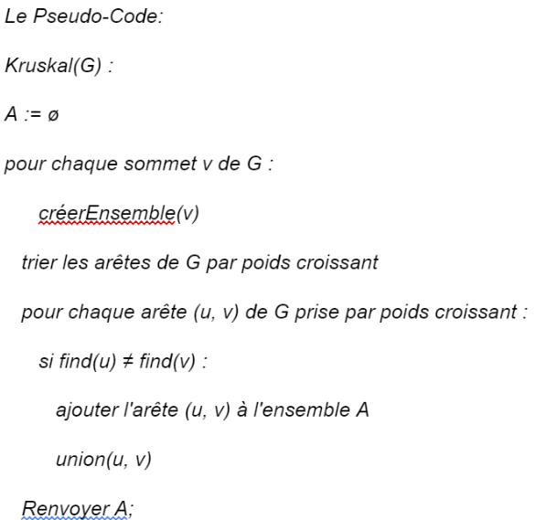
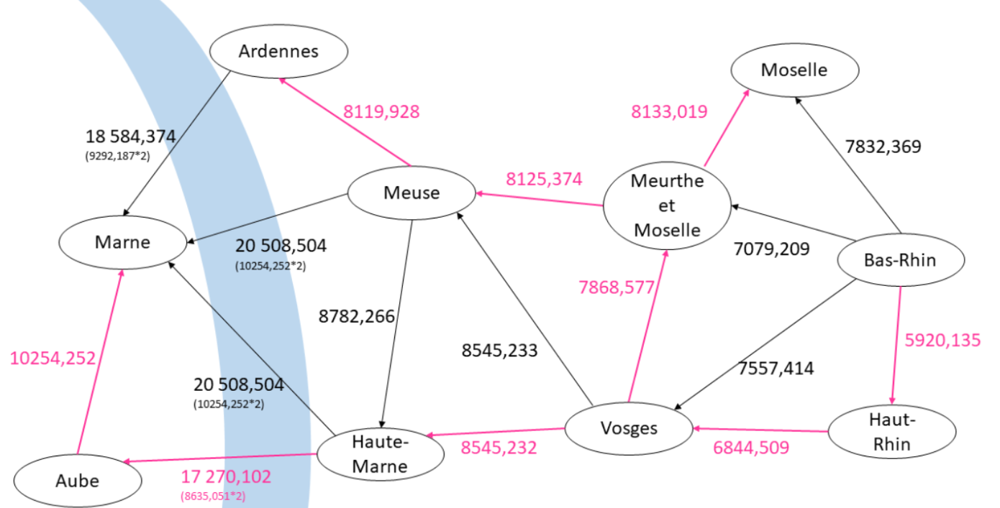

Algorithme de Kruskal
Implémentation de l'algorithme de l'arbre couvrant minimal

Aperçu du projet

Description du projet
Implémentation en Java de l'algorithme de Kruskal pour trouver l'arbre couvrant de poids minimal dans un graphe pondéré non orienté. L'application permet de visualiser étape par étape le processus de construction de l'arbre couvrant minimal.
Ce projet m'a permis d'approfondir mes connaissances en théorie des graphes et en structures de données avancées, notamment l'implémentation efficace de l'union-find (disjointed sets).
Technologies utilisées
Fonctionnalités développées
- Représentation graphique des graphes pondérés
- Implémentation de l'algorithme de Kruskal
- Visualisation étape par étape
- Calcul du poids minimal total
- Détection et gestion des cycles
- Interface interactive pour créer des graphes
Défis techniques rencontrés
- Tri : Optimisation du tri des arêtes par poids
- Visualisation : Représentation claire des graphes complexes
- Algorithme : Gestion correcte des cycles et de la connectivité
- Performance : Optimisation pour de gros graphes
Compétences développées
Théorie des graphes
Arbres couvrants, connectivité, cycles
Algorithmes avancés
Algorithmes gloutons, optimisation
Complexité
Analyse temporelle et spatiale
Applications pratiques
L'algorithme de Kruskal trouve de nombreuses applications dans des domaines variés : conception de réseaux de télécommunications, planification de routes, analyse de circuits électroniques, ou encore optimisation de la logistique. Ce projet m'a sensibilisé à l'importance des algorithmes d'optimisation dans l'informatique moderne.